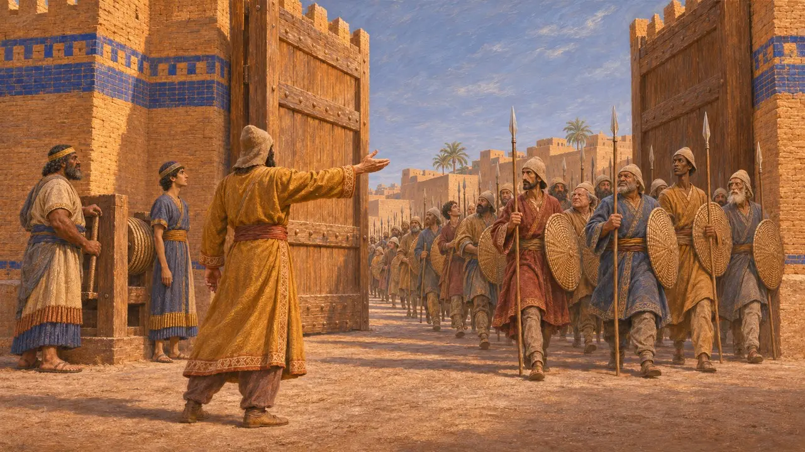
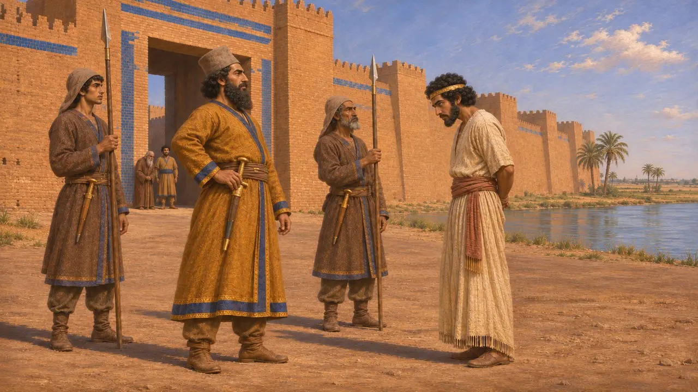
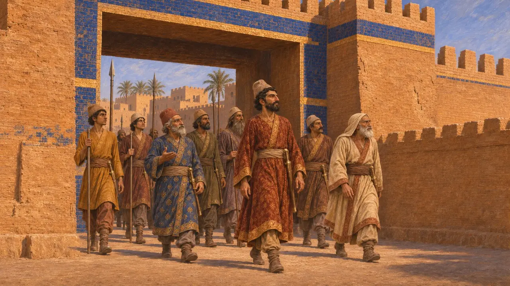
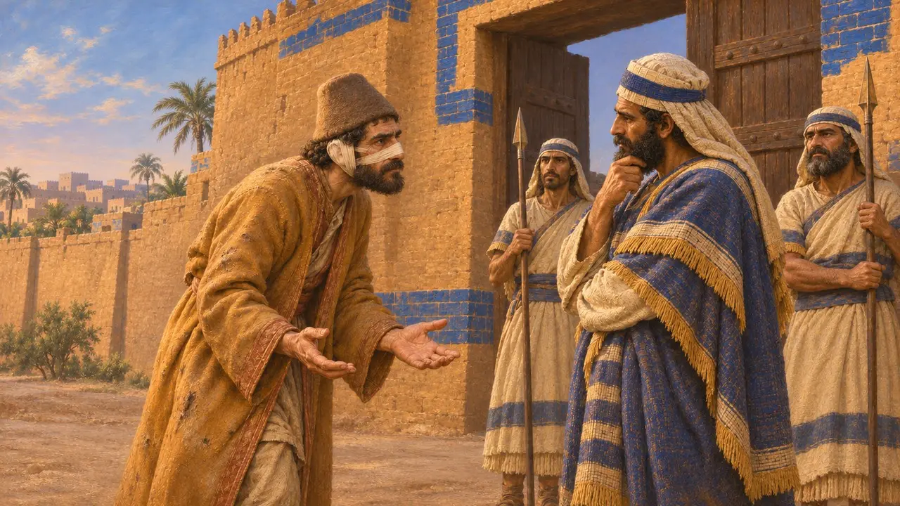

ゾピュロス
紀元前521年頃、ヘロドトスが語るバビロン奪回の物語に登場するペルシア人貴族
ヘロドトスは、ペルシアの貴族ゾピュロスが自らの体を傷つけ、脱走を装うことでバビロンをダレイオスに引き渡したとしている。この話を伝えるのはギリシア人の著述家だけである。ダレイオスのベヒストゥン碑文は、彼の名を挙げずにバビロニアの反乱を記述している。
ゲームでは： ゾピュロスはニディントゥ・ベールとアラカの反乱を扱った出来事記事にのみ名前が挙がり、固有のメカニクスは持たない。
ヘロドトスの伝える攻囲の物語
古代の記述ヘロドトスによれば、バビロンはダレイオスに反旗を翻し、城壁に拠って20か月にわたり持ちこたえた。ヘロドトスはゾピュロスを、偽のバルディヤに対する謀反人のひとりメガビュゾスの子としている。彼の語るところでは、ゾピュロスは自らの鼻と耳を削ぎ、髪を刈り取らせ、ダレイオスの残虐の犠牲者としてバビロニア人のもとへ赴いた。
Herodotus 3.150-160

命令と開かれた城門
古代の記述ヘロドトスによれば、バビロニア人はゾピュロスを信用して兵を与えた。ゾピュロスは、まず小部隊に、次いでより大きな部隊に容易な勝利を収めさせ、のちの攻撃の際にはペルシア人に向けて城門が開かれた。ヘロドトスの伝えるところでは、ダレイオスは彼にバビロンの収入を終身与え、多くのバビロンを得るよりもゾピュロスが無傷でいてくれるほうがよかったと宣言したという。
Herodotus 3.150-160

ベヒストゥン碑文の語ること
同時代の記録ダレイオス自身の碑文は、バビロニアで2度の反乱があったことを記している。1度目はニディントゥ・ベールによるもので、彼はネブカドネザルを名乗った。ダレイオスがチグリス川とユーフラテス川で彼の軍勢を破って終結した。2度目はアラカによるもので、ペルシア人ヴィンダファルナに鎮圧され、アラカはバビロンで串刺しにされた。碑文にはゾピュロスの名はなく、20か月に及ぶ包囲戦も記されていない。
DB §16-20, §49-50

諸史料の突き合わせ
係争中歴史家たちは一般に、ヘロドトスが伝える長期にわたる一度きりの包囲戦を、ベヒストゥン碑文で知られる二度の反乱を圧縮、あるいは混同したものと見なしている。バビロニアの商業文書にも、この二度の反乱は反映されている。ゾピュロスなる人物がバビロン奪回に加わったのかどうかは定かでなく、身体の切断も文学的な作り話とみる研究者は多い。碑文はこの話を裏付けてはいない。
P. Briant, From Cyrus to Alexander, 2002

策略の物語
後世の伝説自らを傷つけて敵に寝返った男の話は、忠実な者が目に見える苦難によって敵の信頼を得るという、よく知られた型の物語に属する。後代のギリシアの著述家たち、たとえば策略集を著したポリュアイノスも、こうした計略を語り直している。この話はまた、ペルシアの貴族を王への忠誠の模範として描いている。
Polyaenus, Stratagems
出典
- Herodotus 3.150-160
- DB §16-20, §49-50
- P. Briant, From Cyrus to Alexander, 2002
- Polyaenus, Stratagems